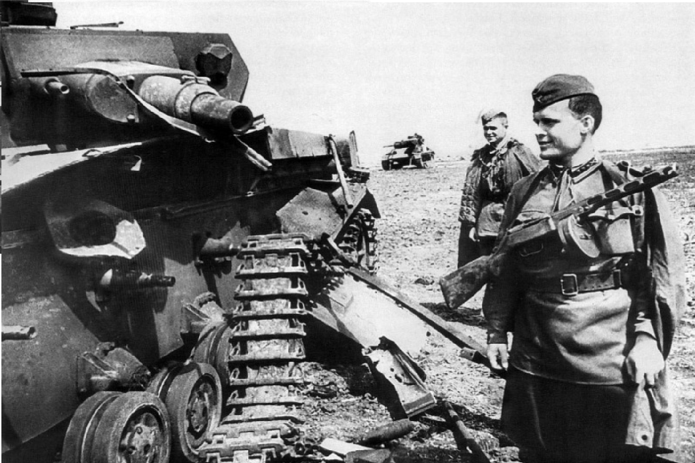

1942
ПодробннеСитуация в начале 1942 года была складывалась крайне напряженно для советских войск. После успешного завершения операции "Барбаросса" немцы захватили Харьков, и к весне 1942 года советское командование решило предпринять контрнаступление с целью восстановления контроля над территорией. Основные силы Красной Армии в районе Харькова были сосредоточены в рамках 6-й армии. Основная цель операции заключалась в окружении и ликвидации немецких войск, находившихся в городе, и восстановлении контроля над стратегически важными районами. 12 мая 1942 года началось наступление, и советские войска (в основном войска 6-й армии под командованием генерала С. К. Тимошенко) начали активные боевые действия. Однако незадолго до начала операции германское командование провело успешное контрнаступление, используя свою тактику "молниеносной войны". В результате мощной реакции немцев, особенно с западных и северных направлений, советские войска оказались втянутыми в жестокие бои за удержание позиций. В условиях сильного сопротивления и недостатка ресурсов советским войскам не удалось добиться решающих успехов, и уже к концу мая советское наступление захлебнулось. |
|
|
Итогом Харьковской операции стало окружение и частичное уничтожение советских войск, которые оказались в ловушке. Бои продолжались до начала июня, в результате чего Красная Армия понесла значительные потери. Несмотря на провал операции, Харьков оставался ареной дальнейших сражений и оставался важным стратегическим районом на протяжении всей войны. |
 |
Харьковская операция 1942 года стала уроком для советского командования, подчеркнув необходимость более тщательной подготовки и координации мыслей на протяжении операций, а также учета силы и маневренности противника. Это сражение стало предвестником будущих изменений в тактике Красной Армии и предлогом к переосмыслению стратегии ведения войны. |